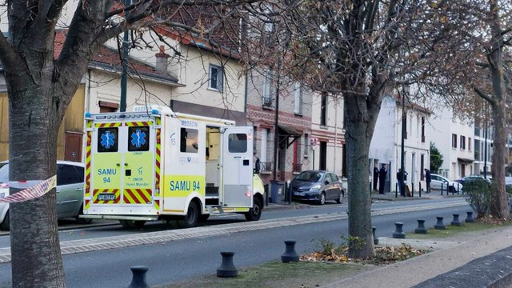

Dimanche 26 novembre, un homme avoue avoir tué ses 3 enfants. L’individu s’est rendu au commissariat de Dieppe pour faire ses aveux. Fait étrange, le drame a eu lieu à 200 km de Dieppe, dans une petite maison d'Alfortville, sur les bords de Seine du Val-de-Marne. La ville est plongé dans la tristesse.
Condamné en 2021 pour "violences sur conjoint" par le tribunal de Créteil, reconnu coupable de violences sur mineur de moins de 15 ans, condamnation sous bracelet électronique; le père de famille est connu des services de police. La mère des trois filles avait obtenu une ordonnance de protection, qui s'est terminée au printemps 2023. Le père avait de nouveau eu la garde de ses filles depuis quelques mois, et s'en réjouissait. Le motif du crime n'est pas encore connu, des suppositions de mobile font surface. La mère des enfants ne voulant se remettre avec lui, a-t-il perdu espoir? Pourquoi s'est-il rendu à Dieppe? "On pense qu'il a songé aux falaises, voulu se suicider et s'est ravisé" estime la police.